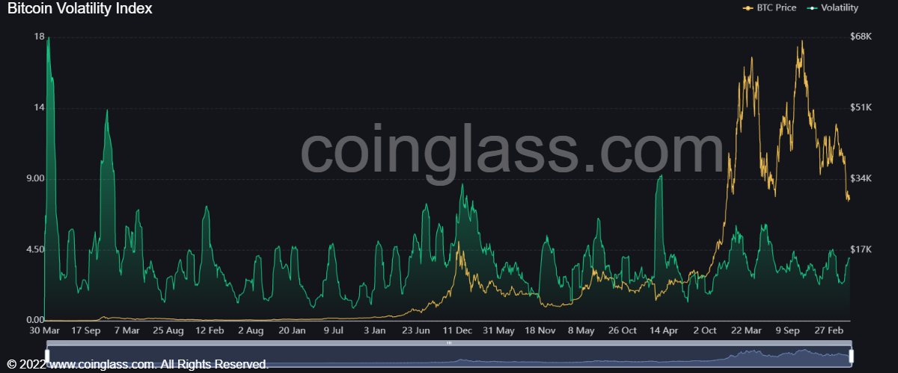

Bitcoin is a decentralized virtual currency, also known as cryptocurrency. As a form of "online currency" that is different from physical currency, it transfers funds through network transmission. Over the past few years, Bitcoin's position among consumers, governments, and financial traders has gradually improved. Bitcoin is now the largest digital cryptocurrency in the world, not only in terms of market capitalization, but also in terms of its popularity and appeal.
Why is Bitcoin valuable?
Although it is not tangible, Bitcoin's code gives it the characteristics of traditional fiat currency, such as scarcity, divisibility, portability, fungibility, and identifiability. Additionally, Bitcoin is decentralized and can be used without an intermediary, providing a degree of anonymity that cannot be counterfeited.
However, the most important reason for Bitcoin's current value comes from people wanting to use it to buy goods and services, store their money, or simply speculate. The more the network of Bitcoin users and merchants grows, the more secure and advantageous the system becomes; the greater the value of Bitcoin against the U.S. dollar and other currencies.
Bitcoin's historical market cap has been volatile, which has also made some people not accept it.
Keep in mind that all currencies, both traditional and cryptocurrencies, can lose their value. In terms of Bitcoin's market capitalization today, it may be that network glitches, new regulations, better alternatives keep people from using it.
Bitcoin fluctuate
Under the influence of supply and demand factors, the fluctuation of Bitcoin price is relatively obvious, and in recent years, the market demand has also shown a trend of ups and downs.
While supply factors are less influential than demand factors, they are equally important in explaining Bitcoin volatility. The supply we refer to here does not refer to the total number of bitcoins available for mining, but to the number of bitcoins currently being exchanged or traded in the market.
If the supply of these circulating bitcoins changed drastically, the current market price would be greatly affected. For example, in the Bitcoin world, "whales" are people who hold large amounts of Bitcoin.
If one of the big whales decides to dump their bitcoin holdings into the market, a sudden increase in supply could cause bitcoin prices to drop and volatility levels to spike. Of course, this assumption presupposes that the demand remains the same.
A sudden increase in the amount of bitcoin available for exchange can lead to a rise in liquidity, which in turn affects bitcoin’s volatility. Because in general, the market for directly buying and selling Bitcoin is not as liquid as the market for trading Bitcoin’s price trend, but in fact the current market price of Bitcoin is based on the market for directly buying and selling Bitcoin.

Volatility is a measure of how much the price of a financial asset varies over time. - coinglass.com